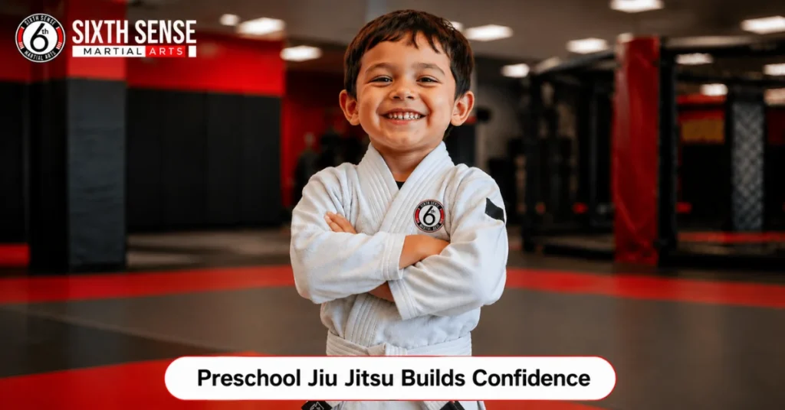
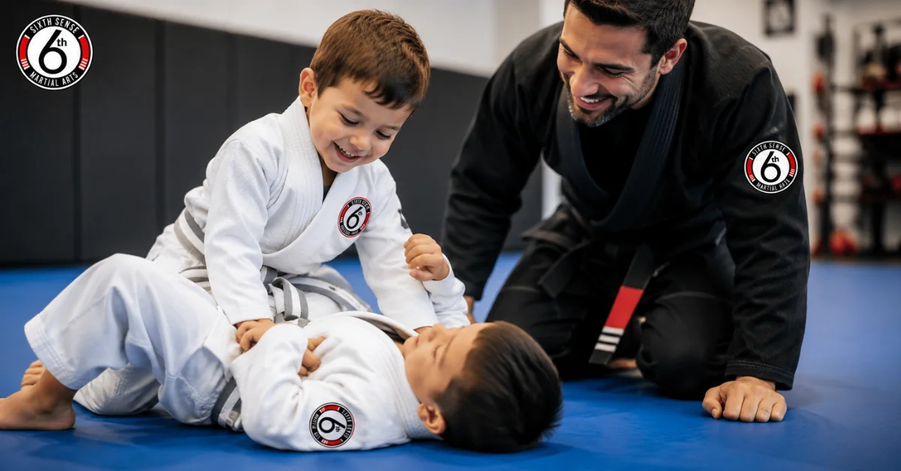
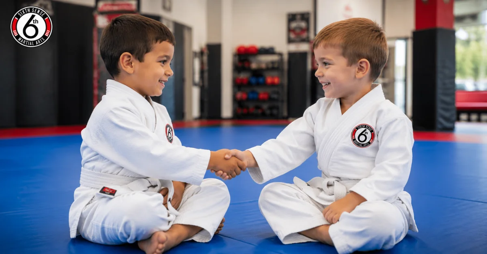

Preschool Jiu Jitsu Builds Confidence and Discipline in Young Kids

Introduction
Preschool jiu jitsu is one of the most powerful things you can do for your young child’s development. When kids start learning jiu jitsu at an early age, they gain far more than just physical skills. They build real confidence, learn how to handle challenges, and grow into more focused little people. Moreover, they do all of this while having fun on the mat. At Sixth Sense Martial Arts in Coppell, TX, we see this transformation happen every single week. If you are a parent wondering whether your 3 to 5-year-old is ready, the short answer is yes. This blog will walk you through everything you need to know about preschool jiu jitsu and why it might be the best decision you make for your child this year.
What Is Preschool Jiu Jitsu
Preschool jiu jitsu is a specially designed version of Brazilian Jiu-Jitsu built for children between the ages of 3 and 5. However, it looks very different from adult BJJ classes. Instead of complex techniques, these sessions focus on movement, coordination, listening skills, and playful interaction. Children learn through games, rolls, and simple partner activities that keep them engaged throughout the class. Furthermore, every drill is age-appropriate and built around how preschoolers naturally learn. The goal is not to create tiny fighters. The goal is to give young kids a structured, fun, and safe environment where their minds and bodies grow together. Consequently, preschool jiu jitsu lays the groundwork for lifelong physical activity and mental discipline.
Why Start Jiu Jitsu at Preschool Age
Many parents assume martial arts for kids are only for older children.However, research and experience both show that starting early provides significant advantages. Between ages 3 and 5, children go through rapid motor skill development. Their brains are also wired for absorbing new information quickly. Therefore, this is actually the ideal window to introduce movement-based learning. In addition, early enrollment helps children form positive habits around physical activity before screens and sedentary habits take hold. Kids who start preschool jiu jitsu tend to carry the lessons of focus, respect, and effort far beyond the mat. As a result, parents often notice improvements in behavior at home and in preschool classrooms as well.
Physical Benefits of Preschool Jiu Jitsu
One of the most obvious benefits of preschool jiu jitsu is improved physical development. Since young children are still building their motor skills, jiu jitsu gives them a fun and guided way to develop coordination, balance, and strength. Every class involves movement that works the whole body. Additionally, the rolling, tumbling, and partner activities improve body awareness in a way that most sports simply do not. Children also develop better flexibility through stretching routines at the start and end of every session. Furthermore, because classes are energetic and engaging, kids burn off energy in a healthy way. This leads to better sleep patterns and improved overall wellness. Physical fitness established at this age builds a foundation that benefits children for life.
How Preschool Jiu Jitsu Builds Confidence
Confidence is one of the biggest gifts preschool jiu jitsu gives to young children. When a child learns a new move and executes it successfully, they feel proud of themselves. Over time, these small wins stack up and create a child who genuinely believes in their own abilities. Moreover, the belt progression system gives kids clear, visible goals to work toward. Each stripe or new belt earned is a reminder that hard work pays off. At Sixth Sense Martial Arts, instructors celebrate every milestone with warmth and encouragement. Children who once struggled to follow instructions or interact with peers often blossom into confident, engaged little learners. That confidence then carries over into school, friendships, and daily life.

Discipline and Focus Through Structured Training
Preschool jiu jitsu is built on structure, and that structure is exactly what young kids need. Each class follows a consistent routine that children quickly learn to anticipate. They bow when entering the mat, listen to their instructor, take turns, and follow rules. As a result, they develop self-discipline without ever feeling restricted. In fact, most kids genuinely enjoy the order because it makes them feel safe and capable. Furthermore, the focus required to learn even simple techniques trains attention spans in a meaningful way. Studies show that children involved in martial arts tend to perform better in academic settings because they develop the ability to concentrate for longer periods. Discipline learned on the mat translates directly into better behavior everywhere else.
Social Skills and Teamwork on the Mat
One thing that surprises many parents is how much preschool jiu jitsu improves social development. Since classes involve partner work and group drills, children learn how to interact with peers in a positive and structured way. They practice taking turns, communicating during drills, and cheering each other on. Additionally, they learn how to handle winning and losing gracefully from a very young age. These are skills that simply cannot be taught in a classroom alone. Children who train together also build friendships naturally because they share challenges and celebrate wins side by side. Over time, the jiu jitsu mat becomes a second community for both kids and families. Therefore, enrolling your child is not just about martial arts but about giving them a place where they belong.

Is Preschool Jiu Jitsu Safe for Young Children
Safety is the first concern of every parent, and it is a fair one. The good news is that preschool jiu jitsu is specifically designed with young children’s safety in mind. Classes are low-contact and movement-focused rather than sparring-focused. Instructors who teach this age group are trained in child development and understand how to keep sessions safe and age-appropriate. At Sixth Sense Martial Arts, the training space is clean, padded, and professionally maintained. Children are never pushed beyond what their bodies are ready for. Instead, progress happens gradually and always at the child’s own pace. As a result, injuries are extremely rare in well-run preschool jiu jitsu programs.
What to Expect in a Preschool Jiu Jitsu Class
If you have never visited a preschool jiu jitsu class before, here is what a typical session looks like at Sixth Sense Martial Arts. Classes generally run between 30 and 45 minutes, which is the ideal length for young attention spans. Sessions begin with a warm-up that includes light jogging, jumping, and basic stretching. After that, instructors introduce a skill through a game or a simple partner drill. Children then practice the skill in a guided, playful way. Toward the end of class, there is usually a fun activity or game that reinforces the lesson of the day. Finally, the class closes with a cool-down and a brief reflection on what was learned. Every child leaves energized, proud, and ready to come back next time.
How to Know If Your Child Is Ready
Not every child is ready at the exact same time, and that is perfectly fine. However, there are some clear signs that your preschooler is ready to start jiu jitsu. First, they should be able to follow simple two-step instructions. Second, they should show some interest in physical play and group activities. Third, they should be emotionally ready to interact with other children and an instructor in a structured setting. If your child still struggles to separate from you at drop-off, that is also okay. Many kids settle in beautifully after just a class or two. At Sixth Sense Martial Arts, we offer trial classes so your child can experience the environment before you commit. Therefore, there is no pressure and no risk to giving it a try.
Preschool Jiu Jitsu vs Other Activities for Young Kids
| Activity | Physical Development | Discipline | Social Skills | Self-Defense Awareness | Fun Factor |
| Preschool Jiu Jitsu | High | High | High | Yes | Very High |
| Soccer | Moderate | Low | Moderate | No | High |
| Dance | Moderate | Moderate | Moderate | No | High |
| Swimming | High | Moderate | Low | No | Moderate |
| Gymnastics | High | High | Low | No | High |
As the table shows, preschool jiu jitsu offers a uniquely well-rounded experience. Furthermore, it is one of the few activities that actively teaches children how to handle physical challenges safely and confidently.
Conclusion
Preschool jiu jitsu is not just a sport. It is an investment in your child’s future. Through consistent training, young children develop physical fitness, mental focus, genuine confidence, and strong social skills that will serve them for a lifetime. Moreover, they learn these things in a fun, safe, and encouraging environment where every child is celebrated. At Sixth Sense Martial Arts, our martial arts classes in Coppell are built around your child’s development from the ground up. We believe every little one deserves the chance to discover what they are truly capable of. So if you have been thinking about enrolling your child, now is the perfect time to take that first step. Come in for a free trial class and see the difference for yourself.
Contact Us
Have questions about our preschool jiu jitsu classes? We would love to hear from you. Reach out to us today and let us help you take the first step toward your child’s growth and confidence.
📍 817 S MacArthur Blvd #100, Coppell, TX 75019
📞 (469) 972-7800
📧 info@sixthsensemma.com
Follow Us on Social Media
Stay connected with the Sixth Sense Martial Arts community. Follow us for class updates, training tips, student highlights, and special offers.
FAQ’s
Most children are ready to begin preschool jiu jitsu between the ages of 3 and 5. At this stage, kids have developed enough motor coordination and cognitive ability to follow simple instructions and participate in structured group activities. However, every child is different, so readiness signs like the ability to follow directions and interest in group play matter more than age alone.
Yes, preschool jiu jitsu is safe for children as young as 3 when taught by qualified instructors in an age-appropriate program. Classes at this level focus on movement, games, and basic coordination rather than contact or sparring. Proper mats, low class sizes, and experienced coaches ensure a safe and nurturing training environment.
Children who train in preschool jiu jitsu regularly develop better self-control, patience, and the ability to follow instructions. These qualities naturally carry over into home life. Parents often report that their children listen better, manage frustration more calmly, and show greater respect toward others after just a few weeks of training.
Preschool jiu jitsu classes typically run between 30 and 45 minutes. This length is intentional because it matches the natural attention span of children aged 3 to 5. Sessions are structured to keep energy high and engagement strong from warm-up to cool-down without overwhelming young learners.
No prior experience is needed at all. Preschool jiu jitsu programs are specifically designed for complete beginners. Children start from zero and learn everything they need right in class. All skill levels are welcome, and instructors pace the learning to match each child’s individual development and readiness.
Most parents begin noticing positive changes in their child’s focus, confidence, and behavior within the first four to six weeks of consistent training. Physical improvements like better coordination and balance tend to show up around the same time. The longer a child trains, the more deeply these benefits become part of who they are.
Train with us in Coppell
The first class is free. Shorts, a t-shirt and a water bottle. We lend the rest.
Book a free class